flowchart LR A[Experimental Design] --> B[Survey Administration] B --> C[Choice Data] C --> D[Parameter Estimation] classDef box fill:#d9d9d9,stroke:#bdbdbd,color:#000; class A,B,C,D box;
ENCI707: Engineering Demand and Policy Analysis
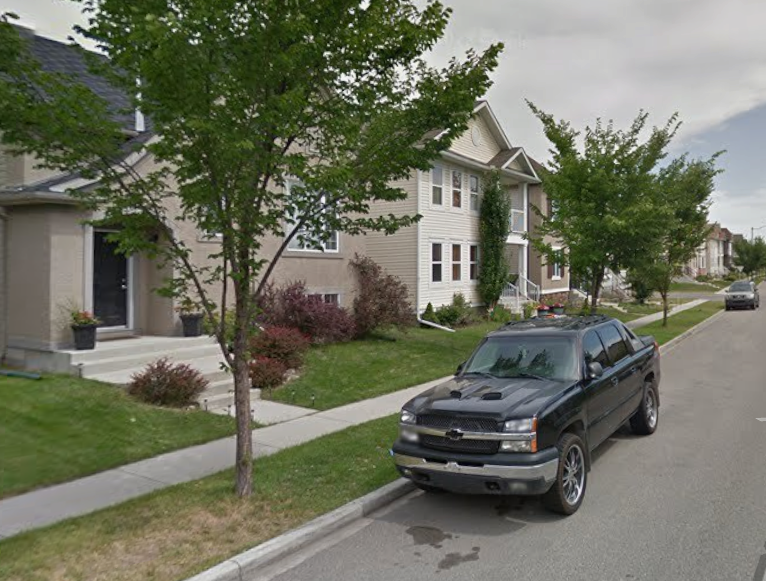
| Factor | Revealed Preference | Stated Preference | Comment |
|---|---|---|---|
| Form of observed choice behaviour | Actual ‘compromise’ choice with real-world constraints | Potentially concerns ‘preferences’ rather than ‘compromise’ choice as hypothetical context can be used to remove real-world constraints | Relates to purpose of survey |
| Establishing values for explantory variables | Engineering values expensive to establish; stated values inexpensive but potentially distorted by faulty perceptions and ex-post justification | Presented vlaues inexpensive and unambiguous | Advantage with SP |
| Correlation structure in estimation data | Correlation structure uncontrolled; analyst must accept potentially high correlations among explanatory variables & deal with impacts on correlations in estimation | Correlation structure controllable; analyst can dictate correlations among explanatory variables & avoid high correlations in estimation | Why SP used |
| Explanation of causal-behavoural connections | Indirect reliance on correlations between observed behaviour & engineering values | Direct in that respondents are asked to react to indicated attribute values | Not an issue in SP with careful design |
| Flexibility | Limited to real-world contexts | Not limited to real-world contexts but validity increasingly questionable as context becomes less familiar; ability to consider non-existing alternatives | Why SP used |
| Transferability | More limited as real-world conditions & context are tightly woven into observed behaviour | Less limited as hypothetical context can be specified to be identical across implementations | Advantage with SP |
| Speed of implementation | Can be slow depending on availability of engineering values for explanatory variables | Relatively fast; opportunity to collect multiple responses from same respondent | Advantage with SP |
| Validity | Near certain | Can be questionable; experimental design is key | Why RP used |
| Certainty about respondent comprehension | Certain to extent that respondent made actual choice in real-world situation | Uncertain to extent that respondent does not understand process but can be validated with supplemental questions | Not often an issue |
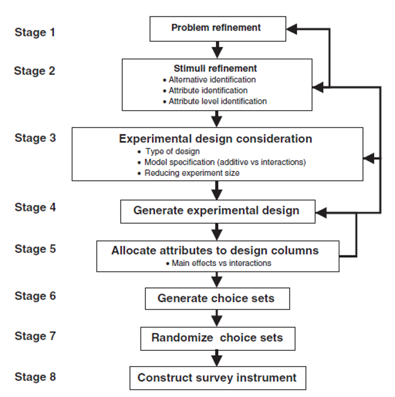
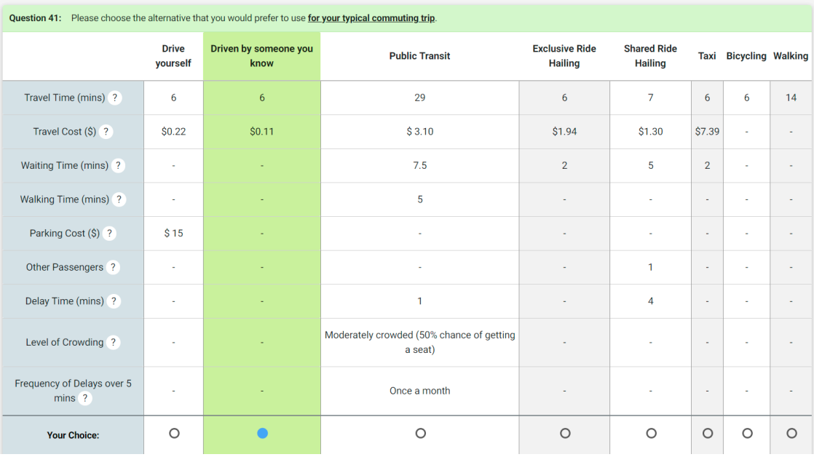
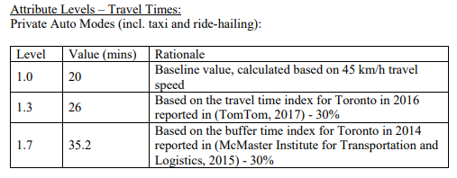
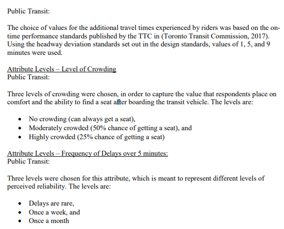
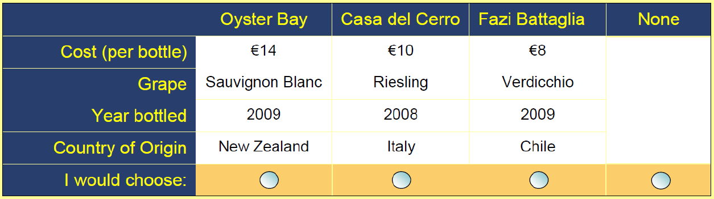
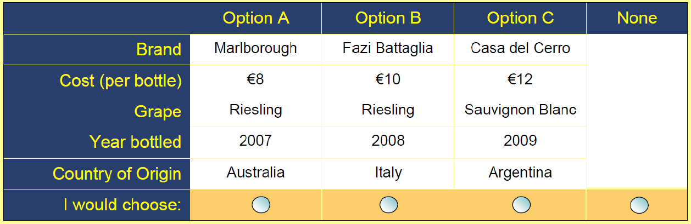
Example: Consider a design with four attributes, where two have two levels, one has three levels and the last has four levels. In the classical jargon in this field we would refer to this as a 22 31 41 factorial design; note that the product of attributes to the power of levels (48 in this case) represents the total number of choice tasks needed to recover all effects (i.e. main or linear effects and all interactions), i.e. a full factorial design (more about this below). Assuming each attribute will produce a unique parameter estimate (i.e. main effects only), the smallest design would require just four choice tasks based on the number of parameters criterion; however, to maintain attribute level balance, the smallest possible design would require 12 choice tasks (12 being divisible without remainder by 2, 3, and 4).
| A1 | A2 | A3 |
|---|---|---|
| 10 | 3 | 2 |
| 20 | -5 | 4 |
| 30 | 3 | 6 |
| 30 | -5 | 6 |
| 30 | -5 | 2 |
| 20 | -5 | 6 |
| A1 | A2 | A3 |
|---|---|---|
| 10 | 3 | 2 |
| 20 | -5 | 4 |
| 30 | 3 | 4 |
| 10 | 3 | 4 |
| 10 | -5 | 2 |
| 20 | 3 | 6 |
| A1 | A2 | A3 |
|---|---|---|
| 10 | 3 | 2 |
| 20 | -5 | 4 |
| 30 | 3 | 6 |
| 10 | -5 | 6 |
| 30 | -5 | 2 |
| 20 | 3 | 4 |
| A1 | A2 | A3 |
|---|---|---|
| 10 | 3 | 2 |
| 30 | -5 | 6 |
| 20 | -5 | 4 |
| 20 | 3 | 4 |
| 10 | -5 | 2 |
| 30 | 3 | 6 |
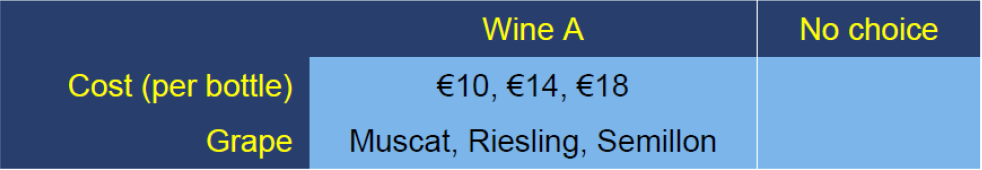
Solution: 9
Solution: 12
Model: \[U_1 = \beta_1 + \beta_2 X_{11} + \beta_3 X_{21} + \beta_4 X_{31} \] \[U_2 = \beta_5 + \beta_2 X_{12} + \beta_3 X_{22} + \beta_6 X_{32} \] \[U_3 = \beta_2 X_{13} + \beta_3 X_{23} + \beta_7 X_{33} \]
Attribute levels: \[X_{11},X_{12},X_{13} \in {2,4,6}\] \[X_{21},X_{22},X_{23} \in {1,3,5}\] \[X_{31},X_{32},X_{33} \in {3,5,7}\]
| Attribute | Bus | Car |
|---|---|---|
| Travel time | 11 | 10 |
| Travel cost | 2.75 | 3 |
| Attribute | Bus | Car |
|---|---|---|
| Travel time | 31 | 10 |
| Travel cost | 2.75 | 3 |
flowchart LR A[Experimental Design] --> B[Survey Administration] B --> C[Choice Data] C --> D[Parameter Estimation] classDef box fill:#d9d9d9,stroke:#bdbdbd,color:#000; class A,B,C,D box;
\[\mathbf{\Sigma} = \begin{pmatrix} se(\hat{\beta}_1)^2 & \cdots & 0 \\ \vdots & \ddots & \vdots \\ 0 & \cdots & se(\hat{\beta}_K)^2 \end{pmatrix}\]
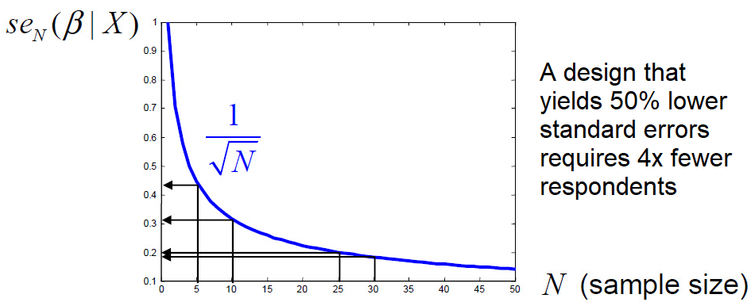
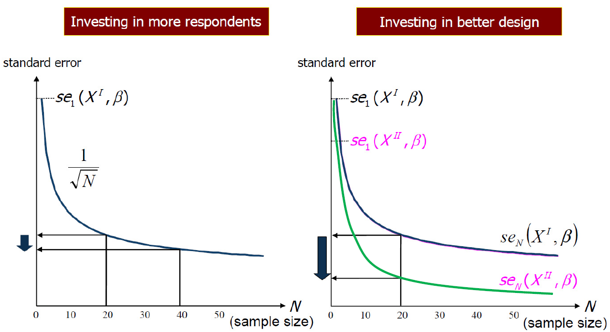
What in the AVC matters most?
| Set | A1 | A2 | B1 | B2 |
|---|---|---|---|---|
| 1 | 2 | 1 | 2 | 1 |
| 2 | 4 | 3 | 6 | 2 |
| 3 | 6 | 5 | 4 | 3 |
| 4 | 2 | 5 | 4 | 1 |
| 5 | 4 | 3 | 2 | 2 |
| 6 | 6 | 1 | 6 | 3 |
\[ \Omega_1= \begin{bmatrix} 8.76 & 0.69 & -0.78 & 2.91\\ 0.69 & 0.38 & 0.02 & 0.39\\ -0.78 & 0.02 & 0.30 & 0.07\\ 2.91 & 0.39 & 0.07 & 1.61 \end{bmatrix} \]
| Set | A1 | A2 | B1 | B2 |
|---|---|---|---|---|
| 1 | 6 | 3 | 2 | 2 |
| 2 | 4 | 1 | 6 | 1 |
| 3 | 2 | 5 | 4 | 3 |
| 4 | 2 | 5 | 4 | 1 |
| 5 | 6 | 1 | 2 | 2 |
| 6 | 4 | 3 | 6 | 3 |
\[ \Omega_1= \begin{bmatrix} 6.97 & -0.22 & -0.77 & 1.92\\ -0.22 & 0.13 & 0.12 & 0.06\\ -0.77 & 0.12 & 0.39 & 0.21\\ 1.92 & 0.06 & 0.21 & 1.27 \end{bmatrix} \]
Given:
\[ \beta_1=-0.2, \quad \beta_2=0.3 \]
\[ \beta_3=0.4, \quad \beta_4=0.5 \]
\[ \Omega_1 = \text{same as before} \]
\[ t_N(\beta|X) = \frac{\beta}{se_N(\beta|X)} \]
\[ \Omega_N(\beta|X) = \frac{1}{N}\Omega_1(\beta|X) \]
S-estimate = 842 (incl. constants)
S-estimate = 17 (excl. constants)
\[ t_1(\beta_1) = \frac{-0.2}{\sqrt{8.76}} = -0.068 \]
\[ t_1(\beta_2) = \frac{0.3}{\sqrt{0.38}} = 0.487 \]
\[ t_1(\beta_3) = \frac{0.4}{\sqrt{0.30}} = 0.730 \]
\[ t_1(\beta_4) = \frac{0.5}{\sqrt{0.07}} = 1.890 \]
\[ t_{842}(\beta_1) = \frac{-0.2}{\sqrt{8.76/842}} = -1.961 \]
\[ t_{17}(\beta_2) = \frac{0.3}{\sqrt{0.38/17}} = 2.007 \]
\[ t_{8}(\beta_3) = \frac{0.4}{\sqrt{0.30/8}} = 2.066 \]
\[ t_{2}(\beta_4) = \frac{0.5}{\sqrt{0.07/2}} = 2.673 \]
Wang et al. (2017) found d-efficient design can lead to low efficiency if priors incorrectly specified
Bayesian efficient design assumes prior parameters only approximately known (according to a distribution)
Bayesian efficient design less ‘optimal’ but more robust to misspecification
Each efficiency measure has a corresponding Bayesian version \[\text{Bayesian D-error} = \int_{\beta} det(\Omega(\beta|X))^{1/K}f(\beta|\mu,\sigma^2)d\beta\]
Difficult to compute but can approximate via simulation
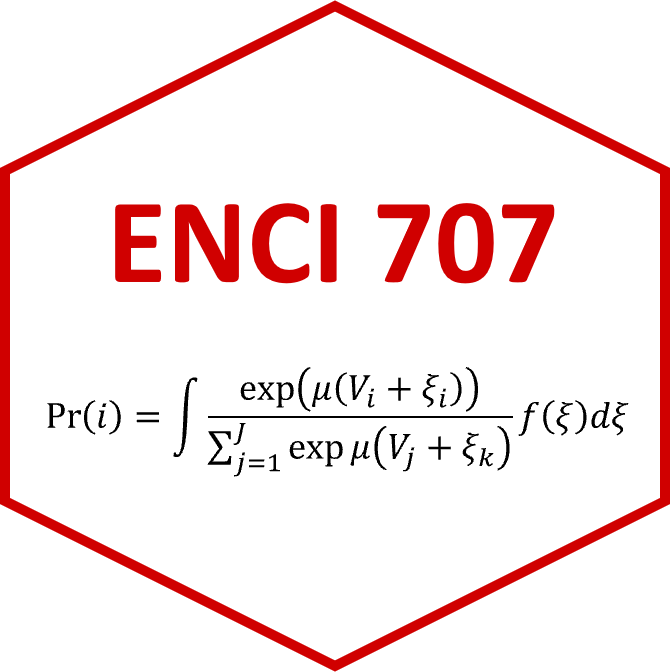